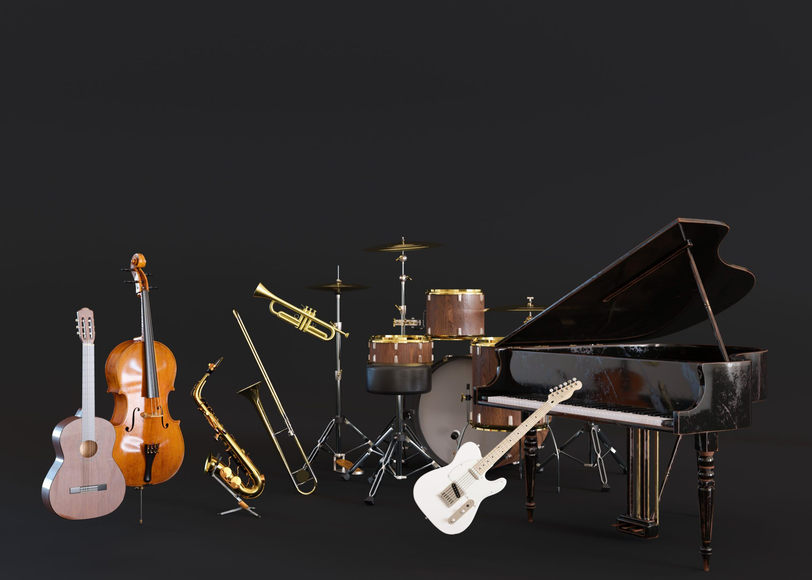

MUSIC GENRES

Explore the diverse genres of music and their unique characteristics that have shaped our world. From classical to jazz, rock to hip-hop, each genre tells a story of cultural evolution and artistic expression. These musical styles have developed over centuries, reflecting the values, struggles, and triumphs of different societies and time periods.
CONNECTION
Discover how music connects people across cultures and generations around the globe. Music transcends language barriers and allows us to communicate emotions and experiences that words cannot express. Whether through concerts, celebrations, or shared listening experiences, music creates bonds that unite humanity in meaningful ways.
HUMAN DEVELOPMENT
Learn how music has influenced human development and continues to shape our cognitive and emotional growth. Scientific research demonstrates that music enhances memory, improves language skills, and boosts overall brain function throughout all stages of life. Beyond the mind, music provides emotional comfort, therapeutic healing, and a powerful outlet for self-expression that is essential to human well-being.